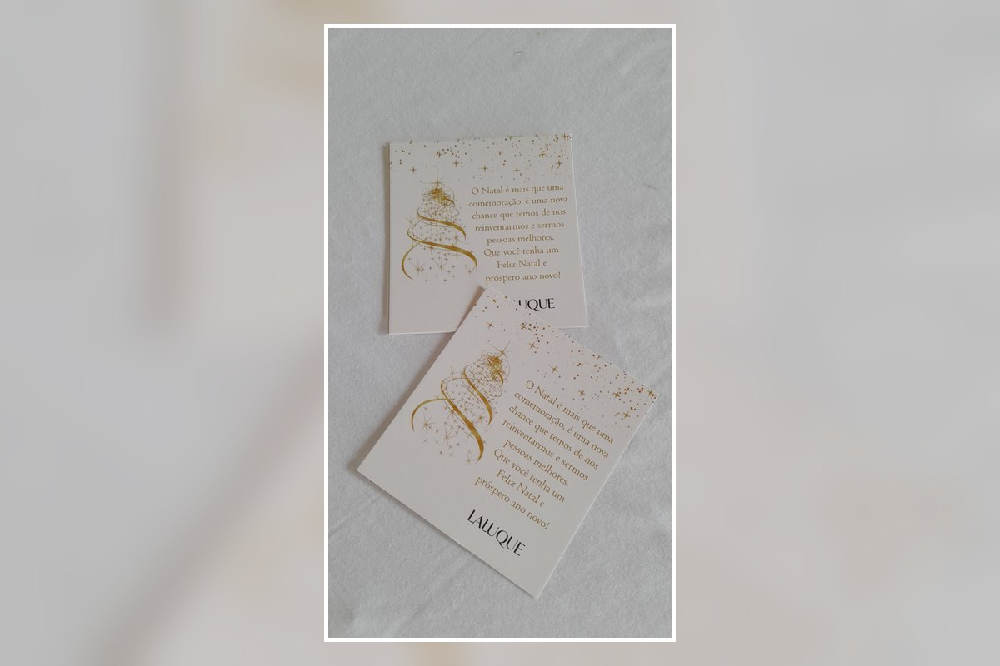

Agradecimento e relacionamento
Inclua uma mensagem de agradecimento, orientações pós-compra ou um convite para o cliente voltar a comprar.
Transforme a abertura do pedido em uma experiência de marca. O cartão pode acompanhar encomendas e embalagens com agradecimento, instruções, redes sociais, QR Code, cupom ou uma mensagem personalizada para o cliente.

O cartão inserido na embalagem cria um ponto de contato direto com o cliente depois da compra. A arte pode ser desenvolvida para combinar com a identidade da marca e com a finalidade do pedido.
Inclua uma mensagem de agradecimento, orientações pós-compra ou um convite para o cliente voltar a comprar.
Instagram, WhatsApp, site, QR Code e outras informações podem ser organizados de forma clara no cartão.
Formato, cores, conteúdo e acabamento podem ser definidos para combinar com sacolas, caixas e demais materiais da marca.
Envie sua arte, referência ou ideia pelo WhatsApp. Informe como pretende usar o cartão e quais informações deseja incluir. Confirmamos formato, quantidade, papel, acabamento, prazo e valor antes da produção.
Envie sua referência e solicite um orçamento personalizado.